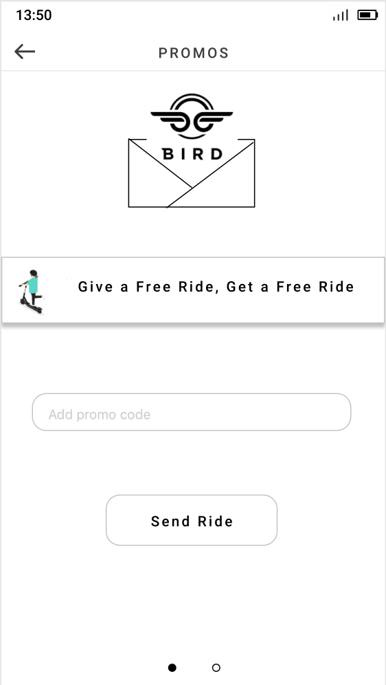
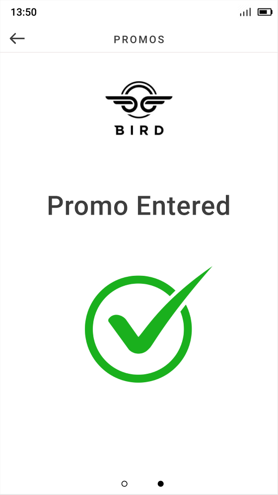

Bird Redesign
The Bird application is a scooter sharing software for users to rent, ride scooters, and enjoy a convenient life. However, among all kinds of ride-sharing software, the Bird app cannot stand out and still contains many inconvenient usability issues. To attain the aspects of redesigning, our group used competitive analysis, user analysis, and UX evaluation to study users’ needs and expectations. We decided to achieve the terseness of the interface appearance and the efficiency of the interaction. Moreover, we aimed to achieve a high-level goal, which is to guarantee the user’s safety concerns.
Overview
The initial problem that we wanted to fix when we chose to redesign Bird was the app’s similar appearance to its competitors. Bird and numerous other scooter and bike sharing apps all look relatively the same. As our team dug deeper into studying the app’s features, we determined that there were many issues that need fixing. After carefully evaluating Bird, we have proposed redesigned the safety feature, the map interface, the promos page, the introductory feature, and the report page.
Methods
Competitive Analysis
Our team conducted a Competitive Analysis on the Bird app by comparing it to 4 other apps: Lime, Lyft, Ofo, and Uber
Remote User Test
Our team conducted in total eight user tests. The users were directed to use the Think Aloud protocol and talk through each step with us as we took detailed notes. We had created seven tasks and the users were asked to complete them in the following order.
- Create and login to account
- Send a promo code to a friend to join Bird
- Locate a nearby scooter, or in the case of Covid-19, locate a Bird Pay restaurant location
- Add a payment method
- Start a ride
- Report damage on a scooter
- Find the “Learn About Safety/Recommendations on Safety” page on the app
After the user test was completed, we asked the users for their final thoughts before the test was concluded.
Heuristic Evaluation
Each of us conducted a heuristic evaluation on the Bird application. The guidelines we decided to follow were Jakob Nielsen’s 10 Heuristics. Each evaluation lasted around an hour.
Survey
We generated an eleven open-ended and close-ended Google Form survey specifically related to the Bird scooter shared app and general questions about scooter shared apps. A total of thirty responses were collected and we were able to analyze the data and find out its variation patterns.
Interview
We created an eighteen open-ended questionnaire and interviewed eight interviewees to collect responses from and later organized their responses into an excel spreadsheet to perform data analysis. After analysing the similarities and differences between their thoughts, we figured out the common thinking pattern when they were using scooter shared apps.
Sketching
During the sketching process, each of us came up with three sketches for each target so in total we had sixty sketches. Then, we presented our sketches, discussed and came up with a consensus sketch for what the solution would be for each design target.
Wireframing
We each drew a mid-level prototype of our design target. The wireframe showcased the consensus sketch we had agreed upon earlier.
Prototype
We finally designed a high fidelity prototype by Figma to display the solution we had come up with for each design target.
Findings
Competitive Analysis
We learned from conducting our competitive analysis that Bird has numerous competitors with the same interface layout. Skip, Lime, and even Lyft Scooters are all direct competitors with the same interface. Ofo and Uber were our indirect competitors. We found that these apps were different from our direct competitors because they offer a different service from Bird. Our main takeaway from conducting the competitive analysis was that we need to make Bird different from its direct competitors so that the app stands out more.
User Analysis and Surveys
We executed surveys and interviewed methods towards target population as 18–35 year-old males and females. we learned more about the target population’s needs and expectations. The participants shared common thoughts and also expressed their unique understanding. By combining the 30 survey responses and 18 interview answers, we analyzed participants’ significant common trait and concluded as below:
- All participants had experience with of sharing ride softwares and 6 of them used Bird software before
- All participants could access their mobile devices’ cameras
- Most participants were more familiar with car sharing experience and they were concerned about the drive, the price and the privacy that the participants might need to communicate with them.
- Most participants tried riding shared scooters before and their experience was described as fun, easy and fast.
- Most participants thought electric scooters were safer than gas-powered vehicles.
- Most participants felt confused of the meaning of icons
- Most participants though the Bird interface was like Lyft/Uber’s interface
- Although All participants concerned about privacy and especially safety, which means the improvement of the software safety features, most participants felt comfortable knowing their location might be used even if the scooter sharing software was closed
- 80% of participants thought their residence area was safe for electric scooters
- 60% of the participants had used scooter sharing before.
- Some participants thought the the Bird interface seemed busy, however it would not affect user experience
- Some participants were confused about the reserve button since it was blended into the background
- 7 participants were not satisfied with his/her latest experience of using public transportation.
- One participants claimed that he could not find the location of himself
After we finished our interview, we generated personas to directly depict our users and scenarios while they are using the Bird app in their daily lives.
Evaluation
We conducted a remote user test and a heuristic evaluation to identify usability issues in the Bird application. In our user tests, we discovered that most of participants failed the tasks we had created because they had difficulty locating certain pages such as Learn About Safety/Recommendations on Safety page or the promo code. They also had a difficult time locating a button or understanding what a button did since the icons were unrecognizable. In our heuristic evaluation, we learned that the Bird app did well in some guidelines outlined in Nielsen’s 10 usability heuristics, but failed to measure up in others. The Bird app did well in visibility of system status, match between system and the real world, user control and freedom, flexibility and efficiency of use, aesthetic and minimalist design, helps users recognize, diagnose, and recover from errors, and help and documentation, but starts showing problems in consistency and standards and recognition rather than recall. The Bird application does moderately well in error prevention.
Prototypes
We each made 3 sketches for all 5 of our features. We then met to discuss which ideas were the best for each feature. Once we decided on a design for each feature, we created our consensus sketches for each target feature as a team. We then assigned each member a feature to create a mid fidelity mockup. Before we made our high fidelity mockups in figma, we met up again to make sure that all mid fidelity mockups worked together. We each designed a prototype in Figma and discussed making smaller details match throughout all features such as colors, font, spacing, etc.
Our Designs
Promos
The problem with Bird’s user interface for the promo page is users had difficulty locating promos so we are hoping to make it easier to locate promos. During our remote user test, we had a task that asked users to locate a promo code. However, 8 out of 8 participants had difficulty locating the promo and as a result failed to complete the task. Because all of our participants failed this task during the user test, it was a clear signal that the promo page needed to be redesigned.
For the promo redesign page, we all had similar ideas. In our sketches we included the promo code on the promo page itself so users will have an easier time accessing it. One of our team members included a confirmation button in their sketch, which we thought was a great idea and decided to include that in our final design. The overall design idea was one that we all had drawn in our initial sketches so we decided to go with that with an additional element of the confirmation button.
Wireframe:

Our new design of the promo page in the Bird app includes the free promo code and an entry bar to add promos on the first page. On the second page, the user sees a confirmation page that tells them the promo was entered successfully.

